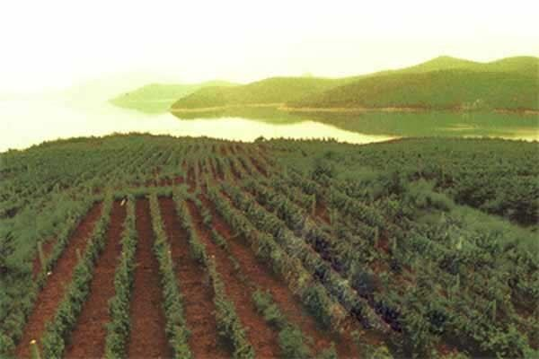

Chine
La Chine possède l’un des plus vastes vignobles du monde, même si une grande partie est consacrée au raisin de table et aux raisins secs. Son industrie viticole moderne, née à la fin du XIXᵉ siècle, a connu une croissance rapide depuis les années 1980, avec le Ningxia, le Shandong, le Xinjiang et le Yunnan parmi ses zones les plus en vue.

Histoire
La Chine possède ses propres espèces de vignes sauvages, et les archéologues ont découvert dans le nord du pays des restes de boissons fermentées très anciennes associant des fruits, peut-être des raisins sauvages, au riz et au miel. La vigne européenne, Vitis vinifera, est toutefois arrivée d’Asie centrale par les routes que l’on appellerait plus tard la route de la soie. La tradition attribue son introduction à l’époque de la dynastie Han, au IIᵉ siècle av. J.-C., à la suite des voyages vers l’ouest du diplomate Zhang Qian. Au cours des siècles suivants, le vin de raisin fut élaboré dans certaines régions, notamment dans les oasis de l’ouest comme Tourfan, et il apparaît dans la poésie de la dynastie Tang, sans jamais supplanter les boissons fermentées et distillées à base de céréales, qui continuèrent de dominer la consommation.
L’industrie viticole moderne est née en 1892, lorsque l’entrepreneur Zhang Bishi fonda à Yantai, dans la province du Shandong, la cave Changyu et importa des plants européens. À partir des années 1980, avec l’ouverture économique du pays, des coentreprises furent créées avec des partenaires étrangers et de grands groupes nationaux se développèrent. Depuis le début du XXIᵉ siècle, le nombre de caves s’est multiplié, le vignoble de cépages de cuve s’est étendu à de nouvelles provinces et des groupes internationaux du vin et du luxe y ont investi.
Climat et régions
L’immensité du pays explique la diversité des conditions. Dans le nord et le nord-ouest, dans des régions comme le Ningxia, le Xinjiang, le Gansu, le Hebei ou le Shanxi, le climat est continental, sec et très ensoleillé, avec des étés chauds et des hivers si froids que, dans de nombreuses zones, les ceps doivent être enterrés chaque automne pour les protéger du gel puis déterrés au printemps. Sur la péninsule du Shandong, sur la côte orientale, le climat est plus tempéré et maritime, mais les pluies de la mousson estivale coïncident avec la maturation et accroissent le risque de maladies. Dans le sud-ouest, au Yunnan, des vignes ont été plantées à haute altitude dans des vallées de montagne, où l’altitude compense la faible latitude.
Les sols varient en conséquence : sols sableux, caillouteux et alluviaux dans les zones arides du nord-ouest, souvent pauvres en matière organique, et sols plus profonds dans les zones orientales. Dans les régions sèches, la viticulture dépend largement de l’irrigation.
Cépages et styles
Le cabernet-sauvignon est le cépage dominant pour le vin rouge et la base de nombreux vins parmi les plus ambitieux, souvent assemblé au merlot et au cabernet franc. Un cépage longtemps connu sous le nom de cabernet gernischt a été identifié en grande partie comme du carménère. Ces dernières années s’est aussi répandu le marselan, un croisement français de cabernet-sauvignon et de grenache qui s’adapte bien à plusieurs régions chinoises, et l’on cultive la syrah et le pinot noir. Parmi les blancs se distinguent le chardonnay, le riesling et le welschriesling, appelé localement « riesling italien », ainsi que quelques cépages plantés plus récemment.
La production est centrée sur les vins rouges, des vins simples de grande consommation aux rouges de type bordelais élevés en barrique élaborés par des caves de taille moyenne ou petite. On produit aussi des blancs, des effervescents de méthode traditionnelle et des vins de glace dans les zones les plus froides du nord-est.
Réglementation
La Chine encadre la production de vin par des normes nationales d’étiquetage et de qualité, et a reconnu des indications géographiques pour certaines zones viticoles, comme les contreforts orientaux des monts Helan, au Ningxia, ou Yantai, au Shandong. Certaines autorités régionales ont en outre développé leurs propres systèmes de promotion et de classement des caves. Le secteur associe de grands groupes industriels à un nombre croissant de caves familiales ou privées, où se concentre une bonne partie de la recherche de qualité.
Régions et appellations
Ningxia
Région viticole (indication géographique des contreforts orientaux des monts Helan) · Région du nord-ouest de la Chine située entre le fleuve Jaune et les monts Helan, devenue depuis le début du XXIᵉ siècle l’une des zones viticoles les plus dynamiques du pays. Son climat sec, ensoleillé et continental donne surtout des rouges de cabernet-sauvignon et d’autres cépages bordelais.
Shandong
Province viticole (avec les zones côtières de Yantai et de Penglai) · Province côtière de l’est de la Chine, berceau de l’industrie vinicole moderne du pays depuis la fondation de Changyu à Yantai. Son climat maritime et de mousson, humide en été, marque des vins au profil plus frais que ceux du nord-ouest.